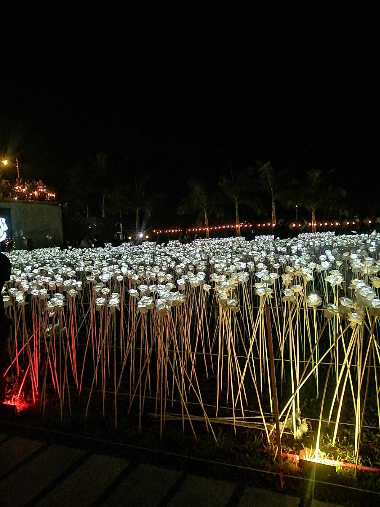

"Welcome to my blog You’ve probably heard of 10, 000 Roses Café & More by now.
It is undeniably the most popular and most sought-after café in Cordova,Cebu"
today after making a huge buzz on Facebook. For sure, at least three days from now,
this Korean café will surely be enjoying the hype now and eventually be worrying about accommodating all these curious and excited guests.
what if there's a 10k Roses that is constructed around the Cordova?

Imagine Though really, 10, 000 Roses Café & More is one beautiful place definitely and considerably a tourist attraction now. AND NO,
these are not real roses. These are artificial, LED-powered roses. That’s why it’s best to go there during dusk until night.